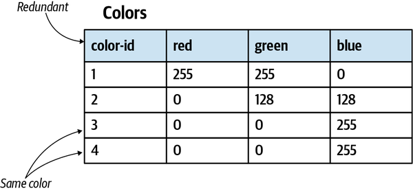
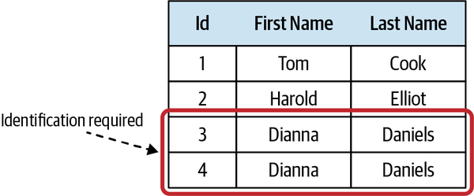
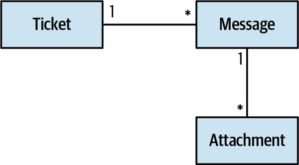
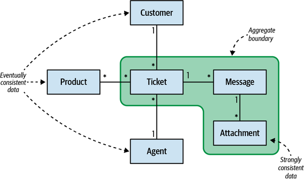
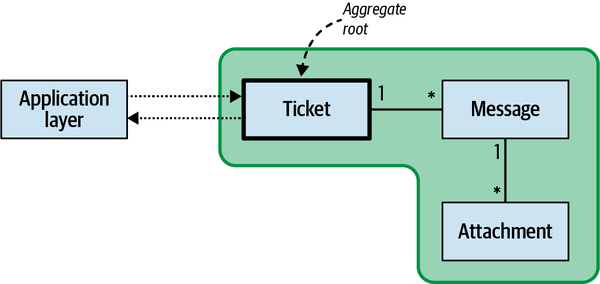
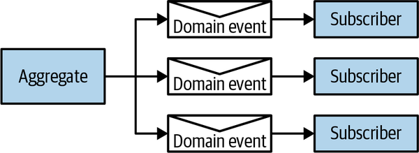

The previous chapter discussed two patterns addressing cases of relatively simple business logic: transaction script and active record. This chapter continues the topic of implementing business logic and introduces a pattern oriented for complicated business logic: the domain model pattern.
As with both the transaction script and active record patterns, the domain model pattern was introduced initially in Martin Fowler’s book Patterns of Enterprise Application Architecture. Fowler concluded his discussion of the pattern by saying, “Eric Evans is currently writing a book on building Domain Models.” The referenced book is Evans’s seminal work, Domain-Driven Design: Tackling Complexity in the Heart of Software.
In his book, Evans presents a set of patterns aimed at tightly relating the code to the underlying model of the business domain: aggregate, value objects, repositories, and others. These patterns closely follow where Fowler left off in his book and resemble an effective set of tools for implementing the domain model pattern.
The patterns that Evans introduced are often referred to as tactical domain-driven design. To eliminate the confusion of thinking that implementing domain-driven design necessarily entails the use of these patterns to implement business logic, I prefer to stick with Fowler’s original terminology. The pattern is “domain model,” and the aggregates and value objects are its building blocks.
The domain model pattern is intended to cope with cases of complex business logic. Here, instead of CRUD interfaces, we deal with complicated state transitions, business rules, and invariants: rules that have to be protected at all times.
Let’s assume we are implementing a help desk system. Consider the following excerpt from the requirements that describes the logic controlling the lifecycles of support tickets:
Customers open support tickets describing issues they are facing.
Both the customer and the support agent append messages, and all the correspondence is tracked by the support ticket.
Each ticket has a priority: low, medium, high, or urgent.
An agent should offer a solution within a set time limit (SLA) that is based on the ticket’s priority.
If the agent doesn’t reply within the SLA, the customer can escalate the ticket to the agent’s manager.
Escalation reduces the agent’s response time limit by 33%.
If the agent didn’t open an escalated ticket within 50% of the response time limit, it is automatically reassigned to a different agent.
Tickets are automatically closed if the customer doesn’t reply to the agent’s questions within seven days.
Escalated tickets cannot be closed automatically or by the agent, only by the customer or the agent’s manager.
A customer can reopen a closed ticket only if it was closed in the past seven days.
These requirements form an entangled net of dependencies among the different rules, all affecting the support ticket’s lifecycle management logic. This is not a CRUD data entry screen, as we discussed in the previous chapter. Attempting to implement this logic using active record objects will make it easy to duplicate the logic and corrupt the system’s state by misimplementing some of the business rules.
A domain model is an object model of the domain that incorporates both behavior and data.1 DDD’s tactical patterns—aggregates, value objects, domain events, and domain services—are the building blocks of such an object model.2
All of these patterns share a common theme: they put the business logic first. Let’s see how the domain model addresses different design concerns.
The domain’s business logic is already inherently complex, so the objects used for modeling it should not introduce any additional accidental complexities. The model should be devoid of any infrastructural or technological concerns, such as implementing calls to databases or other external components of the system. This restriction requires the model’s objects to be plain old objects, objects implementing business logic without relying on or directly incorporating any infrastructural components or frameworks.3
The emphasis on business logic instead of technical concerns makes it easier for the domain model’s objects to follow the terminology of the bounded context’s ubiquitous language. In other words, this pattern allows the code to “speak” the ubiquitous language and to follow the domain experts’ mental models.
Let’s look at the central domain model building blocks, or tactical patterns, offered by DDD: value objects, aggregates, and domain services.
A value object is an object that can be identified by the composition of its values. For example, consider a color object:
classColor{int_red;int_green;int_blue;}
The composition of the values of the three fields red, green, and blue defines a color. Changing the value of one of the fields will result in a new color. No two colors can have the same values. Also, two instances of the same color must have the same values. Therefore, no explicit identification field is needed to identify colors.
The ColorId field shown in Figure 6-1 is not only redundant, but actually creates an opening for bugs. You could create two rows with the same values of red, green, and blue, but comparing the values of ColorId would not reflect that this is the same color.

ColorId field, making it possible to have two rows with the same valuesRelying exclusively on the language’s standard library’s primitive data types—such as strings, integers, or dictionaries—to represent concepts of the business domain is known as the primitive obsession4 code smell. For example, consider the following class:
classPerson{privateint_id;privatestring_firstName;privatestring_lastName;privatestring_landlinePhone;privatestring_mobilePhone;privatestring_email;privateint_heightMetric;privatestring_countryCode;publicPerson(...){...}}staticvoidMain(string[]args){vardave=newPerson(id:30217,firstName:"Dave",lastName:"Ancelovici",landlinePhone:"023745001",mobilePhone:"0873712503",:"dave@learning-ddd.com",heightMetric:180,countryCode:"BG");}
In the preceding implementation of the Person class, most of the values are of type String and they are assigned based on convention. For example, the input to the landlinePhone should be a valid landline phone number, and the countryCode should be a valid, two-letter, uppercased country code. Of course, the system cannot trust the user to always supply correct values, and as a result, the class has to validate all input fields.
This approach presents multiple design risks. First, the validation logic tends to be duplicated. Second, it’s hard to enforce calling the validation logic before the values are used. It will become even more challenging in the future, when the codebase will be evolved by other engineers.
Compare the following alternative design of the same object, this time leveraging value objects:
classPerson{privatePersonId_id;privateName_name;privatePhoneNumber_landline;privatePhoneNumber_mobile;privateEmailAddress_email;privateHeight_height;privateCountryCode_country;publicPerson(...){...}}staticvoidMain(string[]args){vardave=newPerson(id:newPersonId(30217),name:newName("Dave","Ancelovici"),landline:PhoneNumber.Parse("023745001"),mobile:PhoneNumber.Parse("0873712503"),:EmailAddress.Parse("dave@learning-ddd.com”),height:Height.FromMetric(180),country:CountryCode.Parse("BG"));}
First, notice the increased clarity. Take, for example, the country variable. There is no need to elaborately call it “countryCode” to communicate the intent of it holding a country code and not, for example, a full country name. The value object makes the intent clear, even with shorter variable names.
Second, there is no need to validate the values before the assignment, as the validation logic resides in the value objects themselves. However, a value object’s behavior is not limited to mere validation. Value objects shine brightest when they centralize the business logic that manipulates the values. The cohesive logic is implemented in one place and is easy to test. Most importantly, value objects express the business domain’s concepts: they make the code speak the ubiquitous language.
Let’s see how representing the concepts of height, phone numbers, and colors as value objects makes the resultant type system rich and intuitive to use.
Compared to an integer-based value, the Height value object both makes the intent clear and decouples the measurement from a specific measurement unit. For example, the Height value object can be initialized using both metric and imperial units, making it easy to convert from one unit to another, generating string representation, and comparing values of different units:
varheightMetric=Height.Metric(180);varheightImperial=Height.Imperial(5,3);varstring1=heightMetric.ToString();// "180cm"varstring2=heightImperial.ToString();// "5 feet 3 inches"varstring3=heightMetric.ToImperial().ToString();// "5 feet 11 inches"varfirstIsHigher=heightMetric>heightImperial;// true
The PhoneNumber value object can encapsulate the logic of parsing a string value, validating it, and extracting different attributes of the phone number; for example, the country it belongs to and the phone number’s type—landline or mobile:
varphone=PhoneNumber.Parse("+359877123503");varcountry=phone.Country;// "BG"varphoneType=phone.PhoneType;// "MOBILE"varisValid=PhoneNumber.IsValid("+972120266680");// false
The following example demonstrates the power of a value object when it encapsulates all of the business logic that manipulates the data and produces new instances of the value object:
varred=Color.FromRGB(255,0,0);vargreen=Color.Green;varyellow=red.MixWith(green);varyellowString=yellow.ToString();// "#FFFF00"
As you can see in the preceding examples, value objects eliminate the need for conventions—for example, the need to keep in mind that this string is an email and the other string is a phone number—and instead makes using the object model less error prone and more intuitive.
Since a change to any of the fields of a value object results in a different value, value objects are implemented as immutable objects. A change to one of the value object’s fields conceptually creates a different value—a different instance of a value object. Therefore, when an executed action results in a new value, as in the following case, which uses the MixWith method, it doesn’t modify the original instance but instantiates and returns a new one:
publicclassColor{publicreadonlybyteRed;publicreadonlybyteGreen;publicreadonlybyteBlue;publicColor(byter,byteg,byteb){this.Red=r;this.Green=g;this.Blue=b;}publicColorMixWith(Colorother){returnnewColor(r:(byte)Math.Min(this.Red+other.Red,255),g:(byte)Math.Min(this.Green+other.Green,255),b:(byte)Math.Min(this.Blue+other.Blue,255));}...}
Since the equality of value objects is based on their values rather than on an id field or reference, it’s important to override and properly implement the equality checks. For example, in C#:5
publicclassColor{...publicoverrideboolEquals(objectobj){varother=objasColor;returnother!=null&&this.Red==other.Red&&this.Green==other.Green&&this.Blue==other.Blue;}publicstaticbooloperator==(Colorlhs,Colorrhs){if(Object.ReferenceEquals(lhs,null)){returnObject.ReferenceEquals(rhs,null);}returnlhs.Equals(rhs);}publicstaticbooloperator!=(Colorlhs,Colorrhs){return!(lhs==rhs);}publicoverrideintGetHashCode(){returnToString().GetHashCode();}...}
Although using a core library’s Strings to represent domain-specific values contradicts the notion of value objects, in .NET, Java, and other languages the string type is implemented exactly as a value object. Strings are immutable, as all operations result in a new instance. Moreover, the string type encapsulates a rich behavior that creates new instances by manipulating the values of one or more strings: trim, concatenate multiple strings, replace characters, substring, and other methods.
The simple answer is, whenever you can. Not only do value objects make the code more expressive and encapsulate business logic that tends to spread apart, but the pattern makes the code safer. Since value objects are immutable, the value objects’ behavior is free of side effects and is thread safe.
From a business domain perspective, a useful rule of thumb is to use value objects for the domain’s elements that describe properties of other objects. This namely applies to properties of entities, which are discussed in the next section. The examples you saw earlier used value objects to describe a person, including their ID, name, phone numbers, email, and so on. Other examples of using value objects include various statuses, passwords, and more business domain–specific concepts that can be identified by their values and thus do not require an explicit identification field. An especially important opportunity to introduce a value object is when modeling money and other monetary values. Relying on primitive types to represent money not only limits your ability to encapsulate all money-related business logic in one place, but also often leads to dangerous bugs, such as rounding errors and other precision-related issues.
An entity is the opposite of a value object. It requires an explicit identification field to distinguish between the different instances of the entity. A trivial example of an entity is a person. Consider the following class:
classPerson{publicNameName{get;set;}publicPerson(Namename){this.Name=name;}}
The class contains only one field: name (a value object). This design, however, is suboptimal because different people can be namesakes and can have exactly the same names. That, of course, doesn’t make them the same person. Hence, an identification field is needed to properly identify people:
classPerson{publicreadonlyPersonIdId;publicNameName{get;set;}publicPerson(PersonIdid,Namename){this.Id=id;this.Name=name;}}
In the preceding code, we introduced the identification field Id of type PersonId. PersonId is a value object, and it can use any underlying data types that fit the business domain’s needs. For example, the Id can be a GUID, a number, a string, or a domain-specific value such as a Social Security number.
The central requirement for the identification field is that it should be unique for each instance of the entity: for each person, in our case (Figure 6-2). Furthermore, except for very rare exceptions, the value of an entity’s identification field should remain immutable throughout the entity’s lifecycle. This brings us to the second conceptual difference between value objects and entities.

Contrary to value objects, entities are not immutable and are expected to change. Another difference between entities and value objects is that value objects describe an entity’s properties. Earlier in the chapter, you saw an example of the entity Person and it had two value objects describing each instance: PersonId and Name.
Entities are an essential building block of any business domain. That said, you may have noticed that earlier in the chapter I didn’t include “entity” in the list of the domain model’s building blocks. That’s not a mistake. The reason “entity” was omitted is because we don’t implement entities independently, but only in the context of the aggregate pattern.
An aggregate is an entity: it requires an explicit identification field and its state is expected to change during an instance’s lifecycle. However, it is much more than just an entity. The goal of the pattern is to protect the consistency of its data. Since an aggregate’s data is mutable, there are implications and challenges that the pattern has to address to keep its state consistent at all times.
Since an aggregate’s state can be mutated, it creates an opening for multiple ways in which its data can become corrupted. To enforce consistency of the data, the aggregate pattern draws a clear boundary between the aggregate and its outer scope: the aggregate is a consistency enforcement boundary. The aggregate’s logic has to validate all incoming modifications and ensure that the changes do not contradict its business rules.
From an implementation perspective, the consistency is enforced by allowing only the aggregate’s business logic to modify its state. All processes or objects external to the aggregate are only allowed to read the aggregate’s state. Its state can only be mutated by executing corresponding methods of the aggregate’s public interface.
The state-modifying methods exposed as an aggregate’s public interface are often referred to as commands, as in “a command to do something.” A command can be implemented in two ways. First, it can be implemented as a plain public method of the aggregate object:
publicclassTicket{...publicvoidAddMessage(UserIdfrom,stringbody){varmessage=newMessage(from,body);_messages.Append(message);}...}
Alternatively, a command can be represented as a parameter object that encapsulates all the input required for executing the command:
publicclassTicket{...publicvoidExecute(AddMessagecmd){varmessage=newMessage(cmd.from,cmd.body);_messages.Append(message);}...}
How commands are expressed in an aggregate’s code is a matter of preference. I prefer the more explicit way of defining command structures and passing them polymorphically to the relevant Execute method.
An aggregate’s public interface is responsible for validating the input and enforcing all of the relevant business rules and invariants. This strict boundary also ensures that all business logic related to the aggregate is implemented in one place: the aggregate itself.
This makes the application layer6 that orchestrates operations on aggregates rather simple:7 all it has to do is load the aggregate’s current state, execute the required action, persist the modified state, and return the operation’s result to the caller:
01publicExecutionResultEscalate(TicketIdid,EscalationReasonreason)02{03try04{05varticket=_ticketRepository.Load(id);06varcmd=newEscalate(reason);07ticket.Execute(cmd);08_ticketRepository.Save(ticket);09returnExecutionResult.Success();10}11catch(ConcurrencyExceptionex)12{13returnExecutionResult.Error(ex);14}15}
Pay attention to the concurrency check in the preceding code (line 11). It’s vital to protect the consistency of an aggregate’s state.8 If multiple processes are concurrently updating the same aggregate, we have to prevent the latter transaction from blindly overwriting the changes committed by the first one. In such a case, the second process has to be notified that the state on which it had based its decisions is out of date, and it has to retry the operation.
Hence, the database used for storing aggregates has to support concurrency management. In its simplest form, an aggregate should hold a version field that will be incremented after each update:
classTicket{TicketId_id;int_version;...}
When committing a change to the database, we have to ensure that the version that is being overwritten matches the one that was originally read. For example, in SQL:
01UPDATEtickets02SETticket_status=@new_status,03agg_version=agg_version+104WHEREticket_id=@idandagg_version=@expected_version;
This SQL statement applies changes made to the aggregate instance’s state (line 2), and increases its version counter (line 3) but only if the current version equals the one that was read prior to applying changes to the aggregate’s state (line 4).
Of course, concurrency management can be implemented elsewhere besides a relational database. Furthermore, document databases lend themselves more toward working with aggregates. That said, it’s crucial to ensure that the database used for storing an aggregate’s data supports concurrency management.
Since an aggregate’s state can only be modified by its own business logic, the aggregate also acts as a transactional boundary. All changes to the aggregate’s state should be committed transactionally as one atomic operation. If an aggregate’s state is modified, either all the changes are committed or none of them is.
Furthermore, no system operation can assume a multi-aggregate transaction. A change to an aggregate’s state can only be committed individually, one aggregate per database transaction.
The one aggregate instance per transaction forces us to carefully design an aggregate’s boundaries, ensuring that the design addresses the business domain’s invariants and rules. The need to commit changes in multiple aggregates signals a wrong transaction boundary, and hence, wrong aggregate boundaries.
This seems to impose a modeling limitation. What if we need to modify multiple objects in the same transaction? Let’s see how the pattern addresses such situations.
As we discussed earlier in the chapter, we don’t use entities as an independent pattern, only as part of an aggregate. Let’s see the fundamental difference between entities and aggregates, and why entities are a building block of an aggregate rather than of the overarching domain model.
There are business scenarios in which multiple objects should share a transactional boundary; for example, when both can be modified simultaneously or the business rules of one object depend on the state of another object.
DDD prescribes that a system’s design should be driven by its business domain. Aggregates are no exception. To support changes to multiple objects that have to be applied in one atomic transaction, the aggregate pattern resembles a hierarchy of entities, all sharing transactional consistency, as shown in Figure 6-3.

The hierarchy contains both entities and value objects, and all of them belong to the same aggregate if they are bound by the domain’s business logic.
That’s why the pattern is named “aggregate”: it aggregates business entities and value objects that belong to the same transaction boundary.
The following code sample demonstrates a business rule that spans multiple entities belonging to the aggregate’s boundary—“If an agent didn’t open an escalated ticket within 50% of the response time limit, it is automatically reassigned to a different agent”:
01publicclassTicket02{03...04List<Message>_messages;05...0607publicvoidExecute(EvaluateAutomaticActionscmd)08{09if(this.IsEscalated&&this.RemainingTimePercentage<0.5&&10GetUnreadMessagesCount(for:AssignedAgent)>0)11{12_agent=AssignNewAgent();13}14}1516publicintGetUnreadMessagesCount(UserIdid)17{18return_messages.Where(x=>x.To==id&&!x.WasRead).Count();19}2021...22}
The method checks the ticket’s values to see whether it is escalated and whether the remaining processing time is less than the defined threshold of 50% (line 9). Furthermore, it checks for messages that were not yet read by the current agent (line 10). If all conditions are met, the ticket is requested to be reassigned to a different agent.
The aggregate ensures that all the conditions are checked against strongly consistent data, and it won’t change after the checks are completed by ensuring that all changes to the aggregate’s data are performed as one atomic transaction.
Since all objects contained by an aggregate share the same transactional boundary, performance and scalability issues may arise if an aggregate grows too large.
The consistency of the data can be a convenient guiding principle for designing an aggregate’s boundaries. Only the information that is required by the aggregate’s business logic to be strongly consistent should be a part of the aggregate. All information that can be eventually consistent should reside outside of the aggregate’s boundary; for example, as a part of another aggregate, as shown in Figure 6-4.

The rule of thumb is to keep the aggregates as small as possible and include only objects that are required to be in a strongly consistent state by the aggregate’s business logic:
publicclassTicket{privateUserId_customer;privateList<ProductId>_products;privateUserId_assignedAgent;privateList<Message>_messages;...}
In the preceding example, the Ticket aggregate references a collection of messages, which belong to the aggregate’s boundary. On the other hand, the customer, the collection of products that are relevant to the ticket, and the assigned agent do not belong to the aggregate and therefore are referenced by its ID.
The reasoning behind referencing external aggregates by ID is to reify that these objects do not belong to the aggregate’s boundary, and to ensure that each aggregate has its own transactional boundary.
To decide whether an entity belongs to an aggregate or not, examine whether the aggregate contains business logic that can lead to an invalid system state if it will work on eventually consistent data. Let’s go back to the previous example of reassigning the ticket if the current agent didn’t read the new messages within 50% of the response time limit. What if the information about read/unread messages would be eventually consistent? In other words, it would be reasonable to receive reading acknowledgment after a certain delay. In that case, it’s safe to expect a considerable number of tickets to be unnecessarily reassigned. That, of course, would corrupt the system’s state. Therefore, the data in the messages belongs to the aggregate’s boundary.
We saw earlier that an aggregate’s state can only be modified by executing one of its commands. Since an aggregate represents a hierarchy of entities, only one of them should be designated as the aggregate’s public interface—the aggregate root, as shown in Figure 6-5.

Consider the following excerpt of the Ticket aggregate:
publicclassTicket{...List<Message>_messages;...publicvoidExecute(AcknowledgeMessagecmd){varmessage=_messages.Where(x=>x.Id==cmd.id).First();message.WasRead=true;}...}
In this example, the aggregate exposes a command that allows marking a specific message as read. Although the operation modifies an instance of the Message entity, it is accessible only through its aggregate root: Ticket.
In addition to the aggregate root’s public interface, there is another mechanism through which the outer world can communicate with aggregates: domain events.
A domain event is a message describing a significant event that has occurred in the business domain. For example:
Ticket assigned
Ticket escalated
Message received
Since domain events describe something that has already happened, their names should be formulated in the past tense.
The goal of a domain event is to describe what has happened in the business domain and provide all the necessary data related to the event. For example, the following domain event communicates that the specific ticket was escalated, at what time, and for what reason:
{"ticket-id":"c9d286ff-3bca-4f57-94d4-4d4e490867d1","event-id":146,"event-type":"ticket-escalated","escalation-reason":"missed-sla","escalation-time":1628970815}
As with almost everything in software engineering, naming is important. Make sure the names of the domain events succinctly reflect exactly what has happened in the business domain.
Domain events are part of an aggregate’s public interface. An aggregate publishes its domain events. Other processes, aggregates, or even external systems can subscribe to and execute their own logic in response to the domain events, as shown in Figure 6-6.

In the following excerpt from the Ticket aggregate, a new domain event is instantiated (line 12) and appended to the collection of the ticket’s domain events (line 13):
01publicclassTicket02{03...04privateList<DomainEvent>_domainEvents;05...0607publicvoidExecute(RequestEscalationcmd)08{09if(!this.IsEscalated&&this.RemainingTimePercentage<=0)10{11this.IsEscalated=true;12varescalatedEvent=newTicketEscalated(_id,cmd.Reason);13_domainEvents.Append(escalatedEvent);14}15}1617...18}
In Chapter 9, we will discuss how domain events can be reliably published to interested subscribers.
Last but not least, aggregates should reflect the ubiquitous language. The terminology that is used for the aggregate’s name, its data members, its actions, and its domain events all should be formulated in the bounded context’s ubiquitous language. As Eric Evans put it, the code must be based on the same language the developers use when they speak with one another and with domain experts. This is especially important for implementing complex business logic.
Now let’s take a look at the third and final building block of a domain model.
Sooner or later, you may encounter business logic that either doesn’t belong to any aggregate or value object, or that seems to be relevant to multiple aggregates. In such cases, domain-driven design proposes to implement the logic as a domain service.
A domain service is a stateless object that implements the business logic. In the vast majority of cases, such logic orchestrates calls to various components of the system to perform some calculation or analysis.
Let’s go back to the example of the ticket aggregate. Recall that the assigned agent has a limited time frame in which to propose a solution to the customer. The time frame depends not only on the ticket’s data (its priority and escalation status), but also on the agent’s department policy regarding the SLAs for each priority and the agent’s work schedule (shifts)—we can’t expect the agent to respond during off-hours.
The response time frame calculation logic requires information from multiple sources: the ticket, the assigned agent’s department, and the work schedule. That makes it an ideal candidate to be implemented as a domain service:
publicclassResponseTimeFrameCalculationService{...publicResponseTimeframeCalculateAgentResponseDeadline(UserIdagentId,Prioritypriority,boolescalated,DateTimestartTime){varpolicy=_departmentRepository.GetDepartmentPolicy(agentId);varmaxProcTime=policy.GetMaxResponseTimeFor(priority);if(escalated){maxProcTime=maxProcTime*policy.EscalationFactor;}varshifts=_departmentRepository.GetUpcomingShifts(agentId,startTime,startTime.Add(policy.MaxAgentResponseTime));returnCalculateTargetTime(maxProcTime,shifts);}...}
Domain services make it easy to coordinate the work of multiple aggregates. However, it is important to always keep in mind the aggregate pattern’s limitation of modifying only one instance of an aggregate in one database transaction. Domain services are not a loophole around this limitation. The rule of one instance per transaction still holds true. Instead, domain services lend themselves to implementing calculation logic that requires reading the data of multiple aggregates.
It is also important to point out that domain services have nothing to do with microservices, service-oriented architecture, or almost any other use of the word service in software engineering. It is just a stateless object used to host business logic.
As noted in this chapter’s introduction, the aggregate and value object patterns were introduced as a means for tackling complexity in the implementation of business logic. Let’s see the reasoning behind this.
In his book The Choice, business management guru Eliyahu M. Goldratt outlines a succinct yet powerful definition of system complexity. According to Goldratt, when discussing the complexity of a system we are interested in evaluating the difficulty of controlling and predicting the system’s behavior. These two aspects are reflected by the system’s degrees of freedom.
A system’s degrees of freedom are the data points needed to describe its state. Consider the following two classes:
publicclassClassA{publicintA{get;set;}publicintB{get;set;}publicintC{get;set;}publicintD{get;set;}publicintE{get;set;}}publicclassClassB{privateint_a,_d;publicintA{get=>_a;set{_a=value;B=value/2;C=value/3;}}publicintB{get;privateset;}publicintC{get;privateset;}publicintD{get=>_d;set{_d=value;E=value*2}}publicintE{get;privateset;}}
At first glance, it seems that ClassB is much more complex than ClassA. It has the same number of variables, but on top of that, it implements additional calculations. Is it more complex than ClassA?
Let’s analyze both classes from the degrees-of-freedom perspective. How many data elements do you need to describe the state of ClassA? The answer is five: its five variables. Hence, ClassA has five degrees of freedom.
How many data elements do you need to describe the state of ClassB? If you look at the assignment logic for properties A and D, you will notice that the values of B, C, and E are functions of the values of A and D. If you know what A and D are, then you can deduce the values of the rest of the variables. Therefore, ClassB has only two degrees of freedom. You need only two values to describe its state.
Going back to the original question, which class is more difficult in terms of controlling and predicting its behavior? The answer is the one with more degrees of freedom, or ClassA. The invariants introduced in ClassB reduce its complexity. That’s what both aggregate and value object patterns do: encapsulate invariants and thus reduce complexity.
All the business logic related to the state of a value object is located in its boundaries. The same is true for aggregates. An aggregate can only be modified by its own methods. Its business logic encapsulates and protects business invariants, thus reducing the degrees of freedom.
Since the domain model pattern is applied only for subdomains with complex business logic, it’s safe to assume that these are core subdomains—the heart of the software.
The domain model pattern is aimed at cases of complex business logic. It consists of three main building blocks:
Concepts of the business domain that can be identified exclusively by their values and thus do not require an explicit ID field. Since a change in one of the fields semantically creates a new value, value objects are immutable.
Value objects model not only data, but behavior as well: methods manipulating the values and thus initializing new value objects.
A hierarchy of entities sharing a transactional boundary. All of the data included in an aggregate’s boundary has to be strongly consistent to implement its business logic.
The state of the aggregate, and its internal objects, can only be modified through its public interface, by executing the aggregate’s commands. The data fields are read-only for external components for the sake of ensuring that all the business logic related to the aggregate resides in its boundaries.
The aggregate acts as a transactional boundary. All of its data, including all of its internal objects, has to be committed to the database as one atomic transaction.
An aggregate can communicate with external entities by publishing domain events—messages describing important business events in the aggregate’s lifecycle. Other components can subscribe to the events and use them to trigger the execution of business logic.
The domain model’s building blocks tackle the complexity of the business logic by encapsulating it in the boundaries of value objects and aggregates. The inability to modify the objects’ state externally ensures that all the relevant business logic is implemented in the boundaries of aggregates and value objects and won’t be duplicated in the application layer.
In the next chapter, you will learn the advanced way to implement the domain model pattern, this time making the dimension of time an inherent part of the model.
Which of the following statements is true?
Value objects can only contain data.
Value objects can only contain behavior.
Value objects are immutable.
Value objects’ state can change.
What is the general guiding principle for designing the boundary of an aggregate?
An aggregate can contain only one entity as only one instance of an aggregate can be included in a single database transaction.
Aggregates should be designed to be as small as possible, as long as the business domain’s data consistency requirements are intact.
An aggregate represents a hierarchy of entities. Therefore, to maximize the consistency of the system’s data, aggregates should be designed to be as wide as possible.
It depends: for some business domains, small aggregates are best, while in others it’s more efficient to work with aggregates that are as large as possible.
Why can only one instance of an aggregate be committed per transaction?
To ensure that the model can perform under high load.
To ensure correct transactional boundaries.
There is no such requirement; it depends on the business domain.
To make it possible to work with databases that do not support multirecord transactions, such as key–value and document stores.
Which of the following statements best describes the relationships between the building blocks of a domain model? Select all that apply.
Value objects describe entities’ properties.
Value objects can emit domain events.
An aggregate contains one or more entities.
Which of the following statements is correct about differences between active records and aggregates?
Active records contain only data, whereas aggregates also contain behavior.
An aggregate encapsulates all of its business logic, but business logic manipulating an active record can be located outside of its boundary.
Aggregates contain only data, whereas active records contain both data and behavior.
An aggregate contains a set of active records.
1 Fowler, M. (2002). Patterns of Enterprise Application Architecture. Boston: Addison-Wesley.
2 All the code samples in this chapter will use an object-oriented programming language. However, the discussed concepts are not limited to OOP and are as relevant for the functional programming paradigm.
3 POCOs in .NET, POJOs in Java, POPOs in Python, etc.
4 “Primitive Obsession.” (n.d.) Retrieved June 13, 2021, from https://wiki.c2.com/?PrimitiveObsession.
5 In C# 9.0, the new type record implements value-based equality and thus doesn’t require overriding the equality operators.
6 Also known as a service layer, the part of the system that forwards public API actions to the domain model.
7 In essence, the application layer’s operations implement the transaction script pattern. It has to orchestrate the operation as an atomic transaction. The changes to the whole aggregate either succeed or fail, but never commit a partially updated state.
8 Recall that the application layer is a collection of transaction scripts, and as we discussed in Chapter 5, concurrency management is essential to prevent competing updates from corrupting the system’s data.